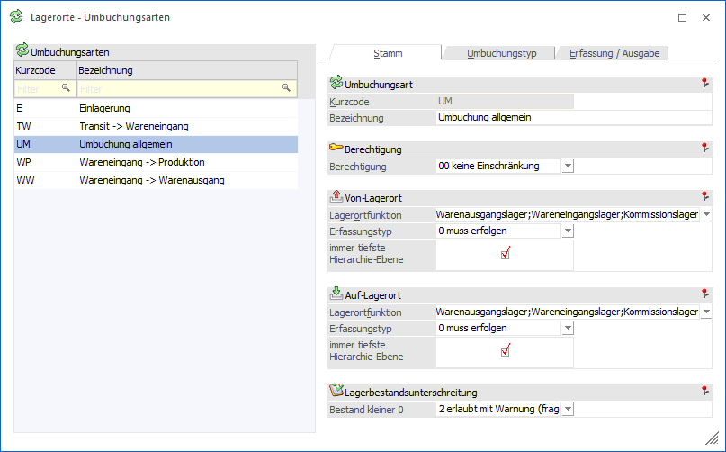
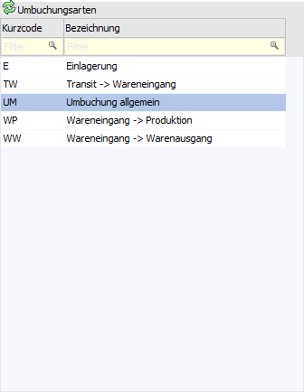

Im Menüpunkt…
1 WinLine FAKT
1 Stammdaten
1 Lagerorte
1 Umbuchungsarten
… können die Umbuchungsarten für das Programm "Lagerorte umbuchen" angelegt und geändert werden.
Hinweis
Standardmäßig werden die Stammdaten in einem "Lesemodus" geöffnet, d.h. es können bestehende Umbuchungsarten angewählt und kontrolliert werden, ein Ändern bzw. eine Neuanlage ist nicht möglich. Hierfür muss zunächst mit Hilfe des Buttons "Bearbeiten" der "Bearbeitungsmodus" aktiviert werden.

Der Belegartenstamm ist hierbei in die folgenden Register unterteilt, welche in den nachfolgenden Kapiteln detailliert beschrieben werden:
ü Register "Erfassung / Ausgabe"
Tabelle "Umbuchungsarten"

Unabhängig vom gewählten Register werden im linken Bereichs des Fensters immer die vorhandenen Umbuchungsarten mit Kurzcode und Bezeichnung angezeigt. Die aktuelle markierte Umbuchungsart wird in der Folge in den Registern dargestellt, wobei ein Wechsel zwischen den Buchungsarten jederzeit möglich ist.
Buttons
Ø Ok
Durch Anwahl des Buttons "Ok" bzw. der Taste F5 werden die vorgenommenen Änderungen bzw. die Neuanlage abgespeichert.
Ø Ende
Mit Hilfe des Buttons "Ende" bzw. der Taste ESC wird der Programmbereich verlassen und alle nicht gespeicherten Änderungen verworfen.
Ø Löschen
Durch Anklicken des "Löschen"-Buttons kann die Umbuchungsart gelöscht werden. Voraussetzung dafür ist, dass die Umbuchungsart im aktuellen Wirtschaftsjahr noch nicht verwendet wurde.
Ø Abbrechen
Durch Anklicken des Buttons "Abbrechen" werden die getätigten Änderungen verworfen, aber der Programmbereich "Umbuchungsarten" bleibt weiterhin geöffnet.
Ø neue Umbuchungsart
Mit Hilfe des Buttons "neue Umbuchungsart" kann eine neue Umbuchungsart angelegt werden.
Ø Bearbeiten
Bei Anwahl dieses Buttons wird der "Bearbeitungsmodus" aktiviert, d.h. bestehende Umbuchungsarten können geändert werden.
Hinweis
Standardmäßig werden die Stammdaten in einem "Lesemodus" geöffnet, d.h. es können bestehende Umbuchungsarten angewählt und kontrolliert werden, ein Ändern bzw. eine Neuanlage ist nicht möglich.